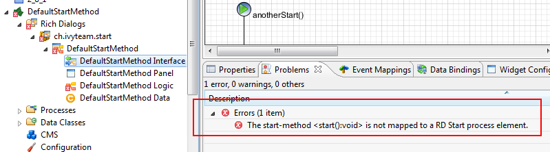
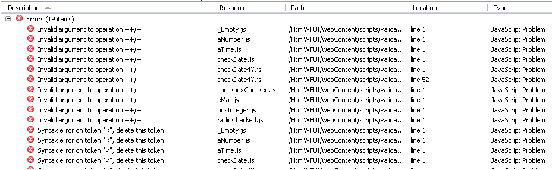
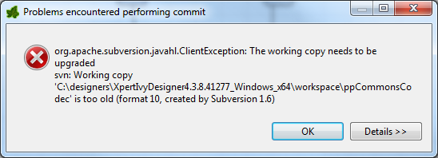

This document informs you in detail about incompatibilities that were introduced between Xpert.ivy versions 4.3 (Pilatus) and 5.0 (Rothorn) and tells you what needs to be done to get your existing 4.3 projects working with Xpert.ivy 5.0.
Migration Notes for Xpert.ivy Designer 4.3 (Pilatus) ... 5.0 (Rothorn)
Migration of projects (project conversion)
Most of the incompatibilities can be resolved automatically by invoking the project conversion in the Designer.
However,�some issues may have to be fixed manually (after the automatic
conversion). Those are described in the next sections.
Configuration in web.xml
If you have modified the web.xml under webapps/ivy/WEB-INF, please do not copy the whole content of your current web.xml to the new Designer. Only copy parts you have modified, otherwise the Designer will not start correctly.
Validation problems
Xpert.Ivy 5 (Rothorn) has a wide set of built in validations, that take care
about the integrity of your process models. It could be that the Problems View
shows more errors and warnings than in Xpert.ivy 4.3 (Pilatus) as additional
validation rules have been integrated into the latest Xpert.ivy Designer.
Errors in the process should be fixed manually. As it is very likely that the
execution of the affected process element will fail at runtime.
Rich Dialog Start Method Validation
The validation now adds an error to the Rich Dialog Logic for each declared
Rich Dialog start method that does not have an implementation. This can lead to
new errors, because until now it was allowed to leave the automatically added
default start method start():void unimplemented.
This is no longer allowed. However, if the default start method is not needed, it is now allowed to delete it. You should therefore delete all unused default start methods to resolve the shown errors.
At runtime nothing has changed. The execution of an unimplemented default start method still adds errors to the log and the correct lifecycle completion of the Rich Dialog is still not guaranteed for that case.

Input Validation Scripts on Html Pages
The validation now reports a number of errors concerning the javascript files used for input validation on Html Forms.

This is because the validation rules are now more strict thena they used to be. However, if you don't fix the javascripts, the Html forms with the input validation still work with no limitation, despite the validation error messages.
If you want to get rid of the this validation errors, you have to fix a single line in each jscript file in the folder yourProject/webContent/scripts/validation
Just replace the html comment tags<!-- ... --> in the first
line with comment delimiters /* ... */ and save the file.�Or as a
simple alternative copy the validation javascript files from an actual new
project into your project to replace the wrong script.
Example of the fixed line in the file _Empty.js:

Generic java.util.List
The support for generic instances of java.util.List has been
enhanced. IvyScript now evaluates the member type of a
java.util.List<?> implementation (see NewAndNoteworthy
Designer).
Java instances of java.util.List which had generic type
information lost their member type when they were used with IvyScript before
5.0 and were treated as instances of List<Object> .
Therefore IvyScript allowed to
- add objects to a list, which did not have the required member type
- assign
List<SomeType>to a list even ifSomeTypewas not the generic type of the list
For example, the parked work tasks of a session have the type
List<ITask> . Using the session API, the following
assignment was possible:
ivy.session.findParkedWorkTasks(0,1).add("iAmNotATask");
With Xpert.ivy 5.0 this bug has been fixed and untyped assignments of this kind are no longer tolerated. If your code contains assignments as shown above, Validation will now show an error marker for it at design time and exceptions will be thrown at runtime.
If you have used java.util.List instances in IvyScript you
should check your project for error markers before you execute it on a
Xpert.ivy 5.0 server.
Integer (32 Bit) Identifier APIs deprecated
All APIs that use Integer or int (32 bit) identifiers for objects that are stored in the system database are deprecated now. The deprecated APIs will still work at least as long as the identifier is not larger than 2'147'483'648. For larger identifiers a NumberFormatException will be thrown.
However, we strongly recommend to use the new APIs that uses Long or long (64 bit) identifiers. The APIs of the following packages are affected:
- ch.ivyteam.ivy.application.*
- ch.ivyteam.ivy.security.*
- ch.ivyteam.ivy.workflow.*
- ch.ivyteam.ivy.workflow.query.*
The most noticable deprecated API is the method getIdentifier():int on interfaces like ITask, ICase, IUser, IRole, etc. Use the new method getId():long instead.
Subclipse 1.8 and SVN 1.7
The Subclipse plugin has been updated to version 1.8 which uses Subversion 1.7 as underlying base. Since Subversion 1.7 has a new working copy format, an upgrade of the working copy is required.
If you want to commit from an SVN 1.6 working copy the commit fails with the following error:

To upgrade an existing working copy of a project in the designer execute the following steps:
- Right-click on the project
- Click on Team/Upgrade
- Confirm the Upgrade
If you use other SVN clients like Tortoise SVN these clients have to be updated as well to a version which supports SVN 1.7.